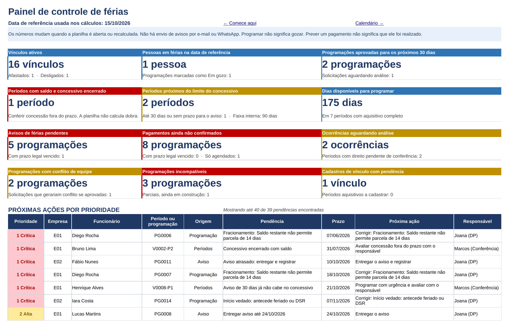
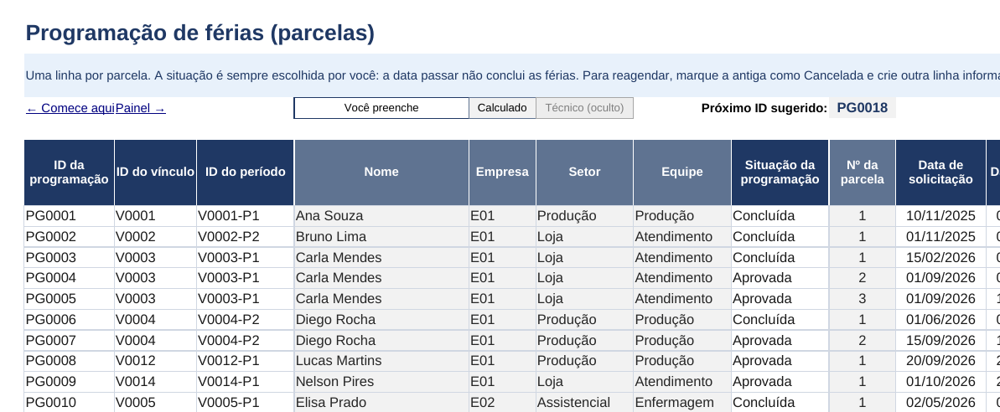
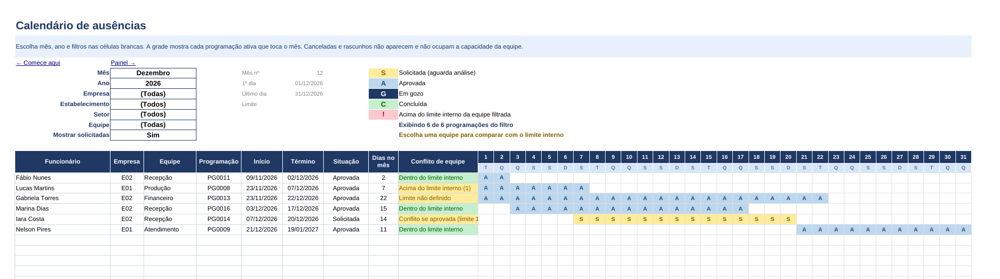
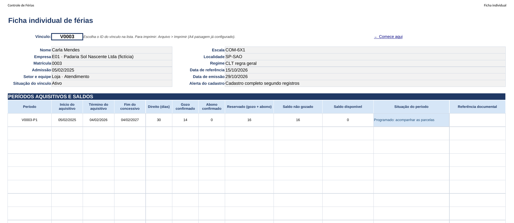

Guia rápido de preenchimento e uso. Feito para quem usa o Excel no dia a dia e quer saber, em poucos minutos, quem tem direito, quanto falta gozar, o que já está reservado e o que precisa ser feito primeiro.
Programar férias não significa que elas foram gozadas. Prever um pagamento não significa que ele foi realizado.
Versão {{VERSAO}} · Criada em {{DATA}} · Regras revisadas em {{REVISAO}} · Feita para Excel 2010 ou mais recente · Sem macros
1. O que vem no pacote
Arquivo
Para que serve
Controle_de_Ferias.xlsx
Versão limpa, pronta para os seus dados. Já traz feriados nacionais de 2026 a 2028, tipos de ocorrência e três modelos de escala.
Controle_de_Ferias_Demonstracao.xlsx
Mesma planilha com 18 vínculos fictícios em duas empresas. Mostra todos os alertas funcionando. Data de referência fixa em 15/10/2026.
Guia_Rapido_Controle_de_Ferias.pdf
Este guia.
Leia-me.txt
Versão, compatibilidade testada, limites, senha da proteção e cópia de segurança.
Dica: abra primeiro a demonstração e passeie pelas abas 09 Painel, 08 Calendário e 10 Ficha individual. Depois use a versão limpa com os seus dados.
Depois de baixar: se o Excel abrir o arquivo em Modo de Exibição Protegido, clique em Habilitar Edição. Só assim as fórmulas recalculam com a data de hoje. Se você guardar o arquivo no Google Drive, baixe e abra no Excel para usar. O uso direto no Google Planilhas não foi testado.
2. Como a planilha está organizada
1ConfiguraçõesEmpresas, estabelecimentos, localidades, equipes, escalas, feriados e responsáveis.
2FuncionáriosUma linha por vínculo, com escala e localidade.
3Períodos e saldosUm período aquisitivo por linha. Faltas conferidas e histórico anterior.
4OcorrênciasAfastamentos e licenças que podem mexer no direito ou no gozo.
5ProgramaçãoUma parcela de férias por linha, com a situação.
6ProvidênciasAviso, ciência, valores, pagamento, registro e arquivo.
7ConsultaPainel, Calendário e Ficha individual.
+EstimativaValor bruto aproximado de férias, terço e abono.
Os registros se ligam por identificadores: empresa → vínculo → período aquisitivo → programação. As providências pertencem a uma programação. As ocorrências pertencem a um vínculo e, quando você informa, a um período. Por isso duas pessoas com o mesmo nome ou a mesma matrícula em empresas diferentes nunca se misturam.
O que cada cor quer dizer
Cor
Significado
Você preenche
Célula branca com cabeçalho azul-marinho. É o único lugar onde você digita.
Calculado
Célula cinza-clara com cabeçalho cinza-azulado. Está protegida contra edição acidental.
Em acompanhamento. Exemplo: Pagamento previsto até a data indicada.
Verde
Etapa conferida ou concluída segundo os registros. Vale só para a etapa indicada.
Cinza
Cancelado, simulação, histórico ou não aplicável.
3. Painel: o que fazer primeiro

Aba 09 Painel na demonstração. Os cartões mostram quantidades com a unidade escrita (vínculos, pessoas, programações, períodos, dias). A lista abaixo ordena as pendências pela gravidade e pelo prazo.
1 Crítica: prazo encerrado ou erro que impede seguir. Resolva primeiro.
2 Alta e 3 Média: prazos próximos e conferências pendentes.
4 Acompanhar: itens sem urgência, como um pagamento ainda distante.
Os números mudam quando a planilha é aberta ou recalculada. A planilha não manda e-mail nem mensagem. Crie o hábito de abrir o Painel toda semana.
4. Passo a passo do preenchimento
4.1 Configurações (aba 02)
Cadastre empresas (ID curto, como E01), estabelecimentos e localidades (município e UF).
Cadastre equipes e, se quiser, o limite interno de pessoas ausentes ao mesmo tempo. Esse limite é uma regra da sua gestão. A lei não fixa esse número.
Em Escalas, informe o dia do descanso semanal remunerado (DSR). Escala 12x36 ou outra variável: marque Variável e registre os dias de descanso na tabela própria.
Em Feriados, complete os estaduais e municipais. Depois marque o ano e a localidade em Calendários revisados. Sem isso a planilha mostra Calendário incompleto.
Alertas internos (90, 60 e 30 dias antes do fim do concessivo) podem ser alterados. Eles também são parâmetros internos.
4.2 Funcionários (aba 03)
Uma linha por vínculo. Use o ID sugerido no topo da aba (V0001, V0002...).
Readmissão: novo ID de vínculo. O vínculo antigo fica como Desligado, com a data.
Não registre CPF completo, dados bancários ou diagnósticos médicos.
4.3 Períodos e saldos (aba 04)
Informe o vínculo e o número do período (1 para o primeiro ano de contrato). As datas são calculadas pelo aniversário da admissão. Depois informe as faltas injustificadas conferidas e a situação da apuração.
Faltas injustificadas no aquisitivo
Até 5
6 a 14
15 a 23
24 a 32
Acima de 32
Dias de direito (CLT, art. 130)
30
24
18
12
0, conferir
Histórico de antes da planilha: use Gozo anterior, Abono anterior, Parcelas anteriores e Maior parcela anterior. Não repita essas parcelas na aba 05.
Exemplo de saldo: direito 30, gozo confirmado 10, abono confirmado 0 e 14 dias aprovados para o futuro. Saldo ainda não gozado = 30 − 10 − 0 = 20. Saldo disponível para programar = 20 − 14 = 6.
4.4 Programação (aba 05)
Uma linha por parcela. A situação é sempre escolhida por você. A data passar não conclui as férias nem confirma pagamento.
Situação
Efeito no saldo
Rascunho
Simulação. Não reserva nada.
Solicitada
Aparece como demanda. Não reserva até ser aprovada.
Aprovada
Reserva os dias.
Em gozo
Continua reservada e indica ausência no calendário.
Concluída
A reserva vira gozo confirmado.
Cancelada
Libera os dias e mantém o registro.

Cada parcela mostra término, retorno previsto pela escala, prazos legais, aviso, pagamento, conflito de equipe e a validação do conjunto do período.
Término = início + dias de gozo − 1. Exemplo: início 30/12/2026 com 5 dias termina em 03/01/2027.
Retorno previsto só aparece com escala fixa e calendário revisado. Fora disso a planilha mostra Conferir escala ou Calendário incompleto.
Fracionamento: até 3 parcelas, uma com 14 dias ou mais e as outras com 5 ou mais, com concordância do empregado. A planilha avalia todas as parcelas do período juntas.
Validação do conjunto: Parcial (ainda falta programar, mas a combinação fecha), Incompatível (a combinação não fecha ou há erro) ou Completa e conferida segundo registros.
Reagendar: marque a parcela antiga como Cancelada, escreva o motivo e crie outra linha com novo ID, informando a antiga em Programação anterior relacionada.
Início vedado: as férias não podem começar nos 2 dias antes de feriado ou do DSR (CLT, art. 134, §3º).
4.5 Providências (aba 07)
Uma linha por programação aprovada. A planilha calcula os dois prazos legais, que são diferentes:
Etapa
Prazo da regra geral
Exemplo para férias em 09/11/2026
Aviso por escrito
30 dias antes do início (art. 135)
10/10/2026
Pagamento
2 dias antes do início (art. 145)
07/11/2026
O pagamento tem quatro estados: Previsto, Agendado, Realizado e Confirmado. Só Confirmado encerra a pendência. No aviso, informe a data de ciência e marque Conteúdo conferido. Um link de evidência sozinho não conta como conferência.
4.6 Ocorrências (aba 06)
Registre afastamentos, licenças e situações que podem afetar o direito. Use só a referência do documento, sem diagnóstico. Enquanto a análise estiver pendente, o período mostra Direito pendente de conferência. Quando a análise mudar o direito ou as datas, registre o resultado também na aba 04.
5. Calendário e Ficha individual

Aba 08 Calendário: S solicitada, A aprovada, G em gozo, C concluída. A linha de baixo compara as ausências de cada dia com o limite interno da equipe filtrada.
Escolha mês, ano, empresa, estabelecimento, setor e equipe. Mostra até 60 programações por filtro.
O conflito usa as datas reais. Duas férias no mesmo mês sem dias em comum não geram conflito.
Sem limite cadastrado aparece Limite não definido.

Aba 10 Ficha individual. Escolha o vínculo e imprima: A4 paisagem, ajustada à largura, cabeçalho repetido e páginas numeradas.
6. Estimativa de valores (aba 11)
Calcula valor bruto: remuneração do gozo, terço do gozo, abono e terço do abono, com base mensal ÷ 30 para mensalista.
Médias e adicionais você informa já apurados. A planilha não inventa percentual de média.
Não calcula INSS, IRRF, descontos, valor líquido nem custo da empresa. Não soma salário do mês nem adiantamento de 13º.
Os valores não alteram nenhum saldo de dias.
7. Adicionar linhas, proteção e cópia de segurança
Tabela
Linhas prontas
Funcionários
600
Períodos e saldos
1.500
Programação
2.000
Providências
2.000
Ocorrências
500
Estimativa de valores
300
Digite sempre na próxima linha branca. Fórmulas, listas e cores já estão lá.
Para passar desses limites: Revisão > Desproteger Planilha (senha FERIAS), arraste a alça do canto inferior direito da tabela para baixo e proteja de novo com Revisão > Proteger Planilha, marcando "Usar AutoFiltro". O Excel copia as fórmulas das colunas calculadas.
A senha só evita apagar fórmulas sem querer. Ela não é segurança nem criptografia dos dados.
A planilha não registra sozinha quem alterou cada célula. Use os campos de responsável, data e justificativa.
Cópia de segurança: antes de mudanças grandes, salve uma cópia com a data no nome (Controle_de_Ferias_2026-10-29.xlsx) e guarde em outra pasta ou na nuvem.
8. Regras usadas e limites
Base: CLT (Decreto-Lei 5.452/1943), arts. 129 a 145, com a redação da Lei 13.467/2017. Revisão em {{REVISAO}}. Os sites oficiais não puderam ser abertos no ambiente onde a planilha foi criada. A conferência foi feita em transcrições públicas da lei. Confira o texto oficial em planalto.gov.br antes de usar.
Doméstico, intermitente e outros regimes especiais aparecem como Análise específica.
Férias coletivas podem ser registradas em Ocorrências, sem cálculo automático.
Concessão fora do prazo e pagamento atrasado geram alertas separados. A planilha não calcula dobra nem penalidade.
Convenções e acordos coletivos podem ter regras próprias. Registre a referência e confira caso a caso.
A planilha organiza e confere registros. Ela não substitui o sistema de folha nem uma análise jurídica.
Nomes, empresas e valores da demonstração são fictícios. Feriados estaduais e municipais da demonstração são exemplos e precisam ser conferidos no ato oficial de cada local.